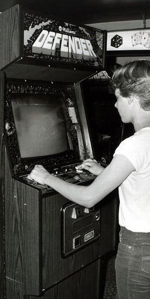
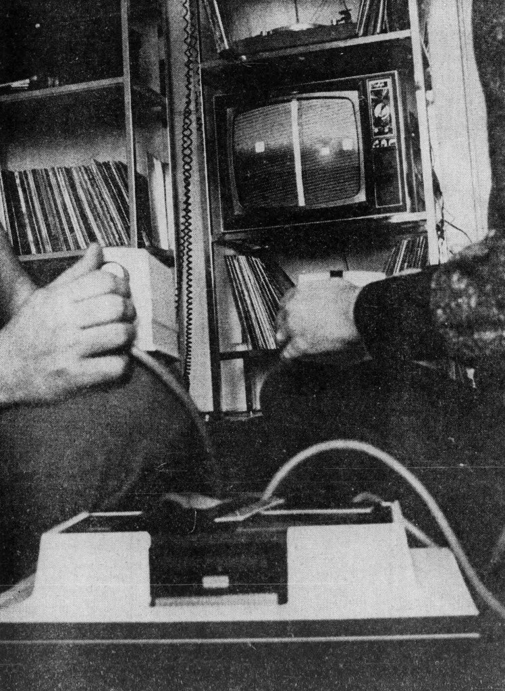
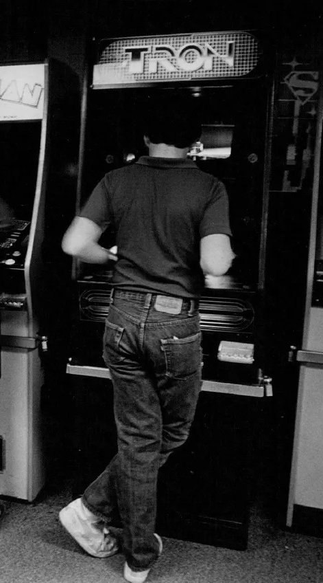
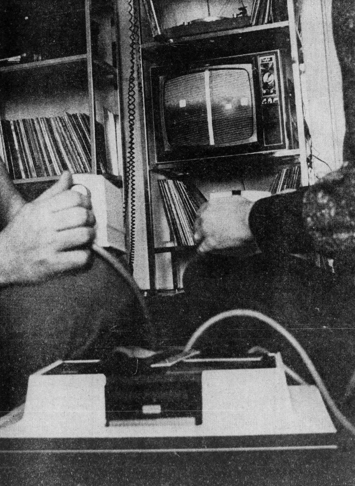
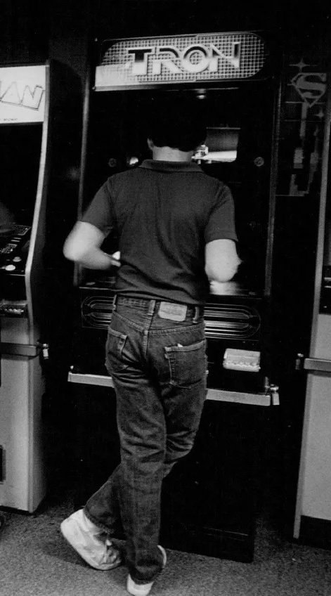
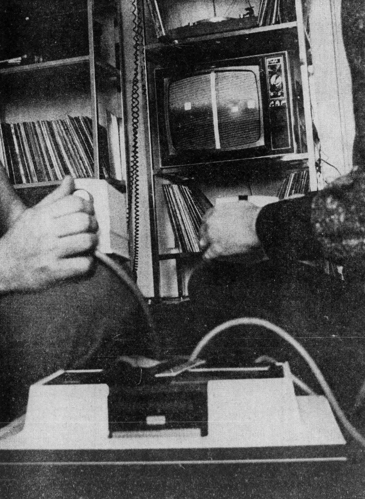
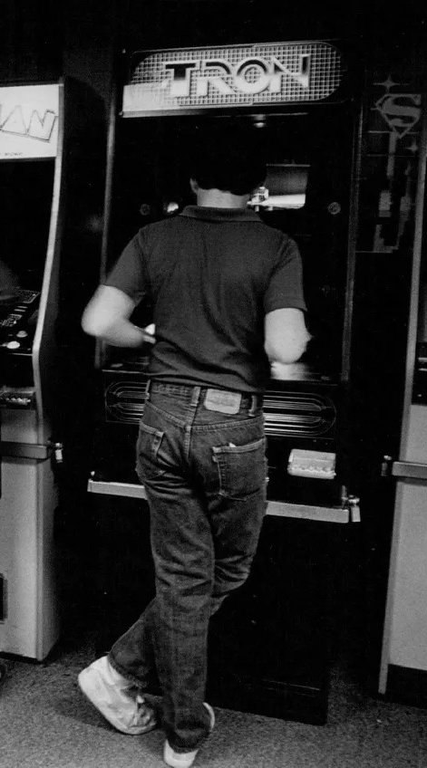

Avant de remonter le temps et d'entrer dans le code, posons les bases. Parce que oui, même si tu joues tous les jours, c'est bien de savoir ce qu'on appelle vraiment un "jeu vidéo".
Un jeu vidéo, c'est une application interactive sur un support électronique (PC, console, téléphone...), dans lequel un joueur interagit avec un environnement à l'aide d'une interface (souris, manette, clavier…).
Contrairement aux autres médias comme le cinéma ou la littérature, le jeu vidéo se distingue par son interactivité fondamentale. Sans l'action du joueur, le jeu reste figé, en attente. Cette caractéristique en fait un médium unique où le spectateur devient acteur de l'expérience qu'il vit.
Les jeux vidéo peuvent prendre des formes extrêmement variées : des puzzles minimalistes comme Tetris aux mondes ouverts complexes comme The Legend of Zelda: Breath of the Wild, en passant par des expériences narratives comme Life is Strange ou des simulateurs comme Microsoft Flight Simulator qui reproduisent fidèlement la réalité.
Un contexte interactif – le joueur agit, et le jeu répond.
Une interface joueur/machine – clavier, manette, écran tactile… peu importe, faut pouvoir interagir !
Une expérience de jeu – avec des règles, des objectifs, et une bonne dose de fun (ou de rage).
Un support électronique – ordinateur, console, smartphone, borne d'arcade ou même montres connectées.
Un programme informatique – derrière chaque jeu se cache des lignes de code qui définissent ses règles et comportements.
L'industrie du jeu vidéo génère aujourd'hui plus de revenus que l'industrie du cinéma et de la musique réunies, avec plus de 175 milliards de dollars en 2024, touchant plus de 3 milliards de joueurs à travers le monde. Une révolution culturelle et technologique qui a commencé avec de simples points lumineux sur un écran.
🦖 Et au tout début ?
Spoiler : il n'y avait pas encore Call of Duty.
Les débuts du jeu vidéo sont intimement liés à l'histoire de l'informatique elle-même. Dans les années 1950, les ordinateurs étaient des machines massives occupant des salles entières, principalement utilisées pour des calculs scientifiques ou militaires. C'est dans ce contexte que quelques pionniers ont eu l'idée révolutionnaire d'utiliser ces machines pour... s'amuser.
🎾 1958 – Tennis for Two
Dans le contexte de la Guerre froide, au Laboratoire national de Brookhaven, le physicien William Higinbotham cherchait un moyen d'intéresser le public aux sciences lors des journées portes ouvertes. Sa solution? Créer une attraction interactive qui démontrerait la puissance des ordinateurs de manière ludique.
Créé par William Higinbotham sur un oscilloscope
Un jeu de tennis ultra simplifié vu de côté
1er jeu jouable à deux
Utilisait un ordinateur analogique Donner Model 30
Contrôlé par des boîtiers avec un bouton pour frapper la balle et un cadran pour ajuster l'angle
La balle était soumise à une simulation de gravité rudimentaire
N'a jamais été breveté car considéré comme une simple démonstration technique
Tennis for Two - The Original Video Game (Youtube)
Ci-dessus⬆️ : une démo de Tennis for Two, le premier jeu vidéo à deux joueurs, créé en 1958 sur un oscilloscope.
🎯 1962 – Spacewar!
À l'université du MIT, un groupe d'étudiants passionnés du Tech Model Railroad Club cherchait à explorer les capacités du nouvel ordinateur PDP-1. Sous la direction de Steve Russell, ils ont créé ce qui deviendra une référence fondatrice dans l'histoire du jeu vidéo, requérant plus de 200 heures de programmation.
Créé par des étudiants du MIT
Deux vaisseaux qui se tirent dessus autour d'une étoile
Premier jeu distribué sur plusieurs machines
Programmé sur le PDP-1, un ordinateur coûtant 120 000$ (équivalent à près d'un million de dollars actuels)
Premier jeu avec une physique réaliste: l'étoile au centre exerçait une attraction gravitationnelle sur les vaisseaux
Contrôlé par des switchs sur le panneau de l'ordinateur, puis par des boîtiers de contrôle fabriqués à la main
Le code source tenait sur une bande perforée de papier et a été largement partagé et modifié
A inspiré Nolan Bushnell, futur fondateur d'Atari
Ci-dessus⬆️ : Spacewar! est un des premiers jeux-vidéo qui a été développé sur PDP-1 (Programmed Data Processor-1). Celui-ci est le premier ordinateur qui a été conçu par Digital Equipment Corportion (DEC).
"Ces jeux, c'est un peu comme les dessins moches que tu faisais à 3 piges : simples, mais pionniers. Ils ont ouvert la voie."
🧮 1952 – OXO (Noughts and Crosses)
Souvent oublié dans l'histoire officielle, OXO est techniquement l'un des tout premiers jeux vidéo, créé par Alexander S. Douglas comme partie de sa thèse de doctorat à l'Université de Cambridge.
Un simple jeu de morpion sur l'ordinateur EDSAC
Premier jeu à utiliser un affichage graphique numérique
Le joueur affrontait l'ordinateur via un cadran téléphonique rotatif
Jamais commercialisé et accessible uniquement à quelques universitaires
"L'ordinateur de l'époque n'était pas plus puissant qu'une calculatrice moderne, mais c'était suffisant pour créer une expérience interactive révolutionnaire" — Alexander S. Douglas, créateur d'OXO
📦 1972 – Naissance de PONG et du jeu vidéo commercial
Après avoir découvert Spacewar! à l'université, Nolan Bushnell a immédiatement compris le potentiel commercial des jeux vidéo. En 1971, il crée Computer Space, le premier jeu d'arcade commercialisé, mais son interface trop complexe le rend peu accessible. La leçon est retenue: son prochain jeu devra être si simple qu'il pourrait être compris en moins de 10 secondes.
Créé par Nolan Bushnell et Allan Alcorn
Inspiré de Tennis for Two, version ping-pong : deux barres, une balle
Distribué dans des bornes d'arcade, énorme succès
Instructions originales: "Évite de rater la balle pour obtenir un score élevé"
Première borne d'arcade installée au Andy Capp's Tavern à Sunnyvale, Californie
Coût de production d'une borne: environ 300$, revenus hebdomadaires: 300$ à 400$
En 1974, Atari vendait une borne Pong toutes les 90 minutes
Version domestique sortie en 1975, exclusivement chez Sears, à 98,95$ (environ 520$ actuels)
A démocratisé le concept de jeu vidéo auprès du grand public
A fait l'objet d'un procès de Magnavox qui possédait un brevet similaire pour leur console Odyssey
🗯️ Anecdote : La première borne PONG est tombée en panne… parce qu'elle était trop utilisée et que la pièce était remplie de pièces de monnaie.
Le succès de PONG a été tel qu'il a inspiré des dizaines d'imitateurs, créant ainsi le premier marché viable pour les jeux vidéo. Ce qui avait commencé comme un simple exercice d'entraînement pour Allan Alcorn, nouveau venu chez Atari, est devenu la pierre angulaire d'une industrie mondiale.
"Nous savions que nous avions un succès quand la borne s'est retrouvée tellement pleine de pièces qu'elle a cessé de fonctionner." — Nolan Bushnell, fondateur d'Atari
🕹️ L'explosion des années 80 : l'ère arcade
Direction les salles d'arcade !
Les années 80 ont été l'âge d'or des salles d'arcade, ces temples du divertissement électronique où des générations entières se sont retrouvées pour défier des machines et établir des records. L'ambiance y était unique: néons colorés, sons électroniques, et rangées de bornes clignotantes attirant les joueurs comme des papillons vers la lumière.
🚀 Les jeux qui ont défini une génération
Space Invaders (1978) — Créé par Tomohiro Nishikado, a causé une pénurie de pièces de 100 yens au Japon
Asteroids (1979) — Premier jeu à permettre aux joueurs d'entrer leurs initiales pour les high scores
Pac-Man (1980) — Conçu par Toru Iwatani pour attirer les femmes dans les salles d'arcade, a vendu plus de 400 000 bornes
Ms. Pac-Man (1981) — Initialement une version pirate de Pac-Man, mais officiellement adoptée par Namco
Donkey Kong (1981) — Avec "Jumpman" alias Mario, premier jeu de Shigeru Miyamoto
Galaga (1981) — Évolution de Space Invaders avec des patterns d'ennemis plus complexes
Dragon's Lair (1983) — Premier jeu utilisant des animations sur LaserDisc, révolutionnant les graphismes
Gauntlet (1985) — Pionnier du jeu coopératif à 4 joueurs simultanés
Street Fighter II (1991) — A popularisé le genre du jeu de combat et prolongé l'ère arcade
💰 L'économie des arcades
Les jeux imposent des codes :
Vies limitées
Scores à battre
Difficulté bien salée
Durée moyenne d'une partie: 3 minutes
Coût moyen: 25 cents par partie (près de 50 milliards de quarters dépensés aux USA dans les années 80)
Phénomène culturel avec films (Tron, The Last Starfighter) et musiques dédiés
Compétitions nationales et internationales avec des championnats télévisés
Les arcades ont été le premier lieu de socialisation autour du jeu vidéo. On s'y retrouvait pour jouer, mais aussi pour observer les meilleurs, apprendre leurs techniques, et célébrer ensemble les victoires et défaites. C'était aussi un laboratoire d'innovation où les développeurs pouvaient tester des technologies coûteuses avant qu'elles ne deviennent accessibles aux consoles domestiques.
On joue pas encore pour l'histoire ou les graphismes. On joue pour le high score et le gameplay pur.
"Les arcades étaient nos arènes modernes. On y allait pour prouver sa valeur, battre des records, et gagner le respect de ses pairs." — Walter Day, fondateur de Twin Galaxies, l'organisation officielle de records de jeux d'arcade
🏠 Du pixel au salon : l'arrivée des consoles
Parallèlement aux arcades, l'industrie du jeu vidéo a commencé à s'inviter dans les foyers avec des systèmes dédiés que l'on pouvait brancher sur son téléviseur.
📺 Les premières générations
1972 : Magnavox Odyssey → première console domestique, créée par Ralph Baer
1977 : Atari 2600 → jeu vidéo à la maison, cartouches interchangeables
1979 : Intellivision de Mattel → première concurrente sérieuse d'Atari
1982 : ColecoVision → graphismes proches de l'arcade
Mais en 1983 : krach → trop de jeux, plus de qualité
Le krach du jeu vidéo de 1983 a été provoqué par une saturation du marché et un manque de contrôle qualité. Des jeux comme le tristement célèbre "E.T." d'Atari, développé en seulement 5 semaines et considéré comme l'un des pires jeux de l'histoire, ont contribué à une perte de confiance des consommateurs. Les revenus de l'industrie sont passés de 3,2 milliards de dollars en 1983 à seulement 100 millions en 1985, soit une chute de 97%.
🍄 1985 – L'arrivée du sauveur moustachu : Nintendo
Sortie de la NES (Famicom au Japon, sortie en 1983)
Stratégie de Nintendo: vendre la console comme un "système de divertissement" plutôt qu'une console de jeux
Introduction du "Seal of Quality" pour garantir la qualité des jeux
Plus de 60 millions d'unités vendues dans le monde
🦔 1988-1994 – L'ère 16-bit et la guerre des consoles
Avec l'arrivée de la Mega Drive (Genesis aux USA) en 1988, SEGA défie Nintendo et déclenche la première grande "guerre des consoles". Nintendo riposte avec la Super Nintendo (Super Famicom) en 1990.
SEGA mise sur la vitesse et cible un public plus adolescent avec des jeux comme Sonic the Hedgehog
Nintendo mise sur la qualité technique et des franchises établies avec Super Mario World, The Legend of Zelda: A Link to the Past
Premières campagnes marketing agressives: "Genesis does what Nintendon't"
Les jeux deviennent plus complexes, plus longs, avec des sauvegardes
Apparition des premiers jeux sur CD-ROM avec le SEGA CD (1992)
🎮 1994-2006 – La révolution 3D
L'arrivée de Sony dans l'industrie du jeu vidéo bouleverse complètement l'équilibre établi. Initialement partenaire de Nintendo pour développer un périphérique CD pour la Super Nintendo, Sony décide de créer sa propre console suite à une trahison de Nintendo.
1994 : PlayStation → démocratisation de la 3D, médium CD moins cher à produire
1996 : Nintendo 64 → stick analogique, mais cartouches coûteuses
1998 : SEGA Dreamcast → première console avec modem intégré
2000 : PlayStation 2 → console la plus vendue de l'histoire (155 millions)
2001 : Microsoft entre dans la course avec la Xbox
Jeux emblématiques: Final Fantasy VII, Metal Gear Solid, Super Mario 64, GTA III
🌐 2006-aujourd'hui – L'ère moderne
Les consoles deviennent des centres de divertissement multimédia connectés, brouillant la frontière entre jeu et média social.
2006 : Nintendo Wii → révolutionne les contrôles avec la détection de mouvement
2013 : PlayStation 4 et Xbox One → focus sur les services en ligne et le partage social
2017 : Nintendo Switch → concept hybride portable/salon
2020 : PlayStation 5 et Xbox Series X → réalité virtuelle, ray-tracing, temps de chargement quasi-nuls
Jeux modernes: The Last of Us, Fortnite, Minecraft, The Legend of Zelda: Breath of the Wild
Mario, c'est pas juste un plombier. C'est le symbole du renouveau du jeu vidéo.
"Le matériel ne sert qu'à faire fonctionner les jeux. Ce sont les jeux qui font vendre une console." — Satoru Iwata, ancien président de Nintendo
Les grands moments du Jeu Vidéo
Année
Événement important
Pourquoi cela a marqué l'histoire du jeu vidéo
1958
Tennis for Two
1er jeu interactif de l'histoire
1962
Spacewar!
1er jeu distribué sur plusieurs ordis
1972
PONG
1er hit commercial
1978
Space Invaders
Premier phénomène culturel global, a causé une pénurie de monnaie au Japon
1980
Pac-Man
Premier personnage iconique du jeu vidéo et premier mascotte de l'industrie
1983
Krach du jeu vidéo
Effondrement du marché nord-américain, réorganisation de l'industrie
1985
Super Mario Bros.
L'ère du jeu narratif commence, sauve l'industrie du jeu vidéo
1986
The Legend of Zelda
Premier monde ouvert avec exploration non-linéaire et sauvegardes
1991
Sonic the Hedgehog
Premier rival sérieux de Mario, début de la "guerre des consoles"
1992
Wolfenstein 3D
Popularisation du genre FPS (jeu de tir à la première personne)
1993
DOOM
Révolutionne les graphismes 3D et le gameplay multijoueur en réseau
1996
Pokémon Rouge/Vert
Phénomène mondial, première franchise multimédia née du jeu vidéo
1997
Final Fantasy VII
Popularise les RPG japonais en Occident, révolutionne la narration
2001
Grand Theft Auto III
Première véritable expérience en monde ouvert 3D, influence tous les jeux modernes
2004
World of Warcraft
Démocratise les MMORPG avec plus de 12 millions d'abonnés à son apogée
2007
iPhone d'Apple
Révolutionne le jeu mobile et touche un public de joueurs occasionnels massif
2009
Minecraft
Phénomène culturel mondial, jeu le plus vendu de tous les temps (238 millions)
2016
Pokémon GO
Premier jeu en réalité augmentée grand public, phénomène social global
2020
COVID-19
Explosion du jeu vidéo pendant le confinement, record historique de revenus
2023
Baldur's Gate 3
Retour en force des RPG complexes, combat l'hégémonie des jeux-services
2025
Kage no Michi
Le meilleur jeu des dernières décennies est apparu
Shigeru Miyamoto (grand maître incontesté et créateur de Mario et Zelda) a dit un jour : "Les jeux les plus simples ont posé les bases des jeux les plus complexes. Comme quoi, un pixel peut changer le monde."
Cette chronologie montre l'évolution fascinante du jeu vidéo, passant de simples divertissements électroniques à des œuvres culturelles complexes influençant la société. Chaque étape a apporté son lot d'innovations techniques et créatives, repoussant les limites de ce que l'on pouvait accomplir avec l'interactivité.
Des premiers points lumineux de Tennis for Two aux mondes virtuels photo-réalistes d'aujourd'hui, le jeu vidéo a parcouru un chemin extraordinaire en à peine 70 ans. Cette évolution rapide témoigne de la créativité humaine et de notre désir constant d'explorer de nouvelles formes d'expression et d'interaction.
La vidéo ci-dessus rend hommage à trois jeux cultes en les combinant dans un gameplay unique. Elle commence avec des visuels de Pong, le tout premier jeu de tennis virtuel, pour montrer la simplicité fondatrice du jeu vidéo. Ensuite, elle plonge dans l'univers de Pac-Man, avec son labyrinthe, ses fantômes et ses pastilles, évoquant l'émergence de jeux plus dynamiques et colorés. Enfin, elle intègre l'ambiance tendue de Space Invaders, où le joueur affronte des vagues d'ennemis, marquant l'arrivée des jeux d'action. L'ensemble est un clin d'œil rétro qui montre comment ces classiques ont posé les bases des jeux modernes, en combinant fun, tension et inventivité.
La simplicité géniale des classiques
Les jeux rétro possèdent une qualité presque magique: une simplicité accessible qui cache une profondeur de gameplay remarquable. Avec des graphismes limités à quelques pixels et des mécaniques qu'on pourrait résumer en une phrase, ils ont pourtant captivé des millions de joueurs et posé les fondations de genres entiers.
Prenons Pong: deux rectangles blancs, un point qui rebondit, et pourtant les matches pouvaient devenir intenses, stratégiques, presque comme un véritable sport. Ou Space Invaders, où la descente implacable des aliens créait une tension croissante renforcée par l'accélération progressive de la musique. Ces jeux ne racontaient pas d'histoires élaborées, mais ils créaient des émotions authentiques: la frustration, l'excitation, la fierté d'améliorer son score.
Cette époque a aussi vu naître des innovations techniques remarquables. Pac-Man, par exemple, utilisait une technique appelée "tile mapping" pour économiser la mémoire limitée des machines, permettant de créer des labyrinthes complexes avec un minimum de ressources. Les développeurs de l'époque étaient contraints par la technologie à trouver des solutions créatives, produisant des jeux qui restent jouables et agréables près de 50 ans plus tard.



L'héritage durable des pionniers
Ces jeux classiques ont non seulement défini leurs propres genres, mais ils continuent d'influencer le design de jeux modernes. Les mécaniques fondamentales de Pong se retrouvent dans tous les jeux de sports virtuels. Le concept de niveaux progressifs avec difficulté croissante, popularisé par Space Invaders, est devenu un standard. Et la chasse aux high scores reste un élément motivationnel puissant, même dans les jeux les plus sophistiqués d'aujourd'hui.
Plus impressionnant encore: ces jeux ont traversé les générations. Des grands-parents qui ont joué à Pong dans les années 70 peuvent aujourd'hui partager cette expérience avec leurs petits-enfants. Dans un medium technologique qui évolue à vitesse fulgurante, cette longévité est remarquable et témoigne de la qualité intemporelle de leur design.
Ils ont dit que PONG était trop simple. Bah, ça les a fait rager quand même.
Quand j'ai conçu Pac-Man, j'ai essayé de créer un jeu que les femmes apprécieraient aussi. Les jeux d'arcade étaient remplis de jeux violents où vous tuiez des extraterrestres. J'ai voulu créer quelque chose de coloré et amusant. — Toru Iwatani, créateur de Pac-Man
🧾 Résumé : ce qu'il faut retenir
L'histoire du jeu vidéo peut être divisée en plusieurs grandes périodes, chacune marquée par des innovations technologiques et créatives qui ont transformé ce divertissement en une forme d'art et une industrie majeure.
Les grandes phases de l'évolution du jeu vidéo
Phase expérimentale (1950-1970) - Les premiers jeux vidéo naissent dans les laboratoires de recherche et les universités
Phase commerciale initiale (1971-1983) - Naissance de l'industrie avec les bornes d'arcade et premières consoles domestiques
Renaissance et standardisation (1985-1994) - Nintendo redéfinit l'industrie, établissement des genres fondamentaux
Révolution 3D (1995-2005) - Passage à la 3D, narration complexe, élargissement du public
Connectivité et services (2006-2015) - Jeux en ligne, DLC, réseaux sociaux intégrés
Le jeu vidéo a dépassé son statut de simple divertissement pour devenir:
Une industrie majeure - Plus de 175 milliards de dollars de revenus annuels en 2024, dépassant le cinéma et la musique combinés
Un médium artistique - Reconnu comme forme d'art par de nombreuses institutions culturelles
Un phénomène social - Avec l'esport qui remplit des stades et attire des millions de spectateurs
Un moteur d'innovation - Poussant les avancées en intelligence artificielle, graphismes, et technologies immersives
Des simples pixels de Tennis for Two aux mondes virtuels photoréalistes d'aujourd'hui, le jeu vidéo a parcouru un chemin extraordinaire en moins de 70 ans, témoignant de l'incroyable créativité humaine et de notre désir d'explorer de nouvelles formes d'expression et d'interaction.


 


